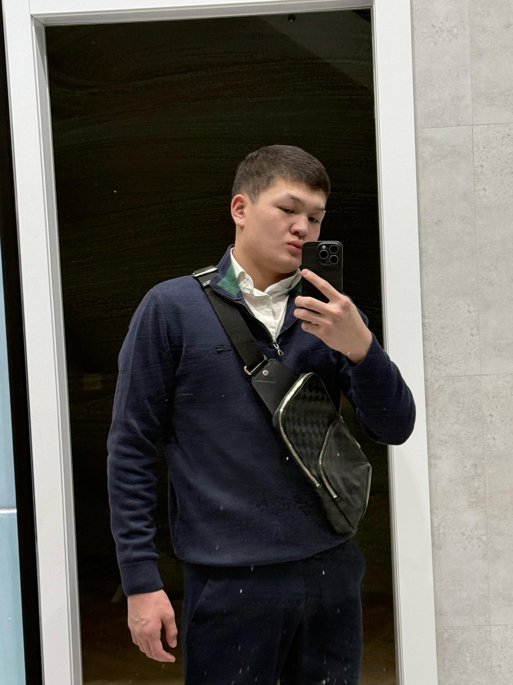
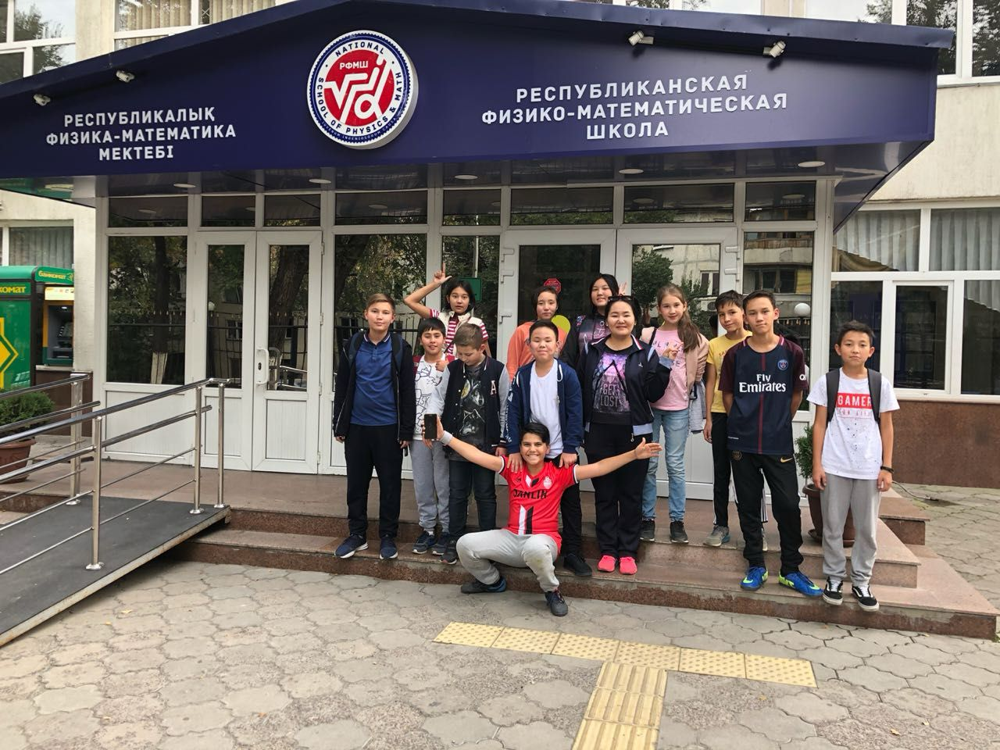
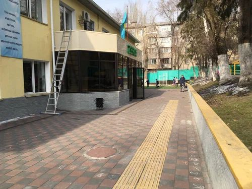
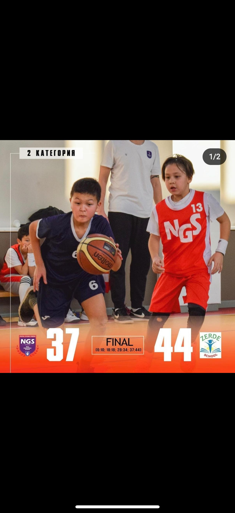
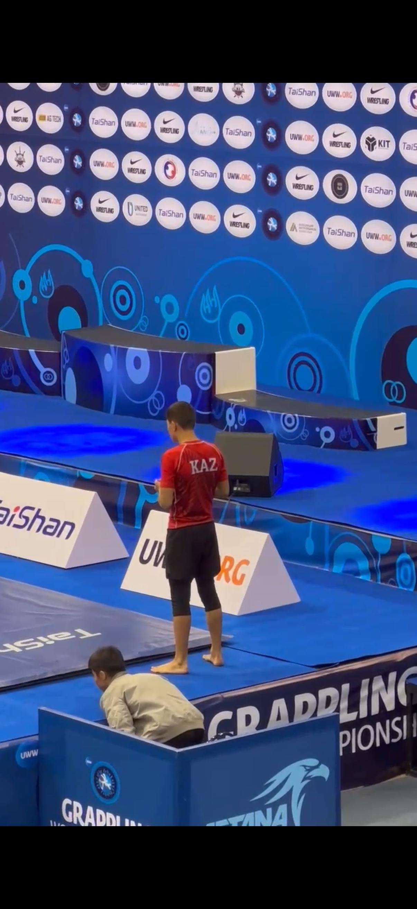
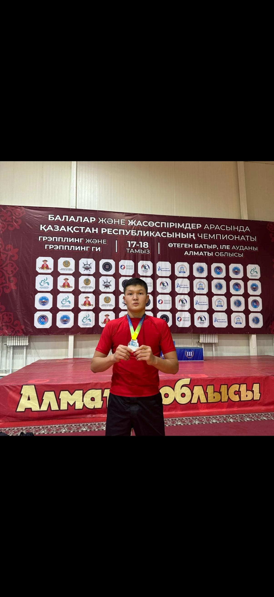
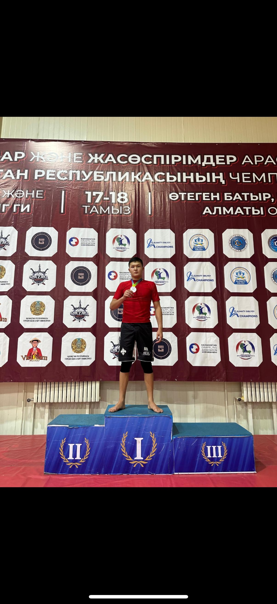
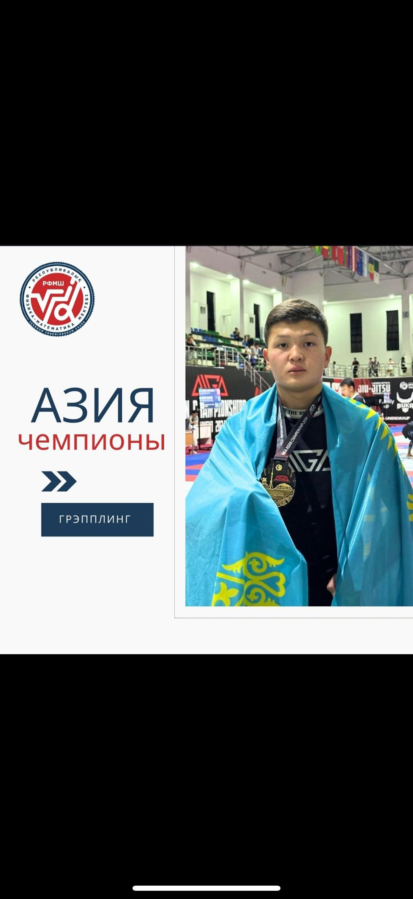

Мен, Мұратбек Заңғар Мейіржанұлы, 2009 жылы 28 қаңтарда Алматы қаласында дүниеге келдім. Отбасымда 6 адам бар: Анам, Әкем, мен, інім және екі қарындасым. 2015 жылы Алматы қаласындағы “Zerde” мектебіне 1-сыныпқа қабылданып, оқуымды бастадым. 2021 жылы Республикалық Физика-Математика мектебіне 7-сынып оқушысы ретінде түстім. Кіші кезімнен спортқа және білімге жақынмын. Қазіргі уақытта РФММ мектебіндегі 10 "A" сынып оқушысымын.







Мен болашақта Қазақстанда бизнесті кеңейтумен айналысқым келеді. Елімізге жаңа технологиялар мен қызметтерді әкеліп, Қазақстанда әлі жоқ нәрселерді енгізуді мақсат етемін. Бұл экономикаға пайда әкеліп, халыққа жаңа мүмкіндіктер береді. Өзімді осы салада жетістікке жеткен кәсіпкер ретінде көремін.
Менің ең үлкен мақсаттарымның бірі – Қазақстанда бизнесті дамыту арқылы оны экономикалық жағынан күшейту. Елімізге жаңа өндіріс, қызметтер мен технологияларды енгізіп, Қазақстанды әлемдік нарықта бәсекеге қабілетті елге айналдыруды қалаймын.
Қазірден бастап осы бағытта кішігірім қадамдар жасап, білім мен тәжірибе жинап келемін. Бір күні Құдайдың қалауымен, өз еңбегіммен және жақындарымның қолдауымен бұл мақсатқа жетемін деп сенемін.
Бұл веб-бет заманауи және таза стильде жасалған. Дизайнда қарапайым түстер, көлеңкелі бөлімдер және оңай оқылатын қаріптер қолданылды. Сонымен қатар, бұл сайт барлық құрылғыларға бейімделген (responsive), сондықтан телефонда да, компьютерде де ыңғайлы көрінеді.